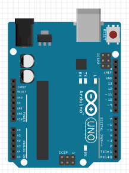
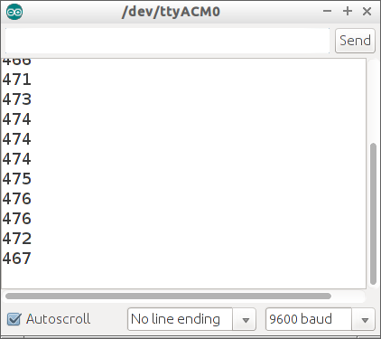
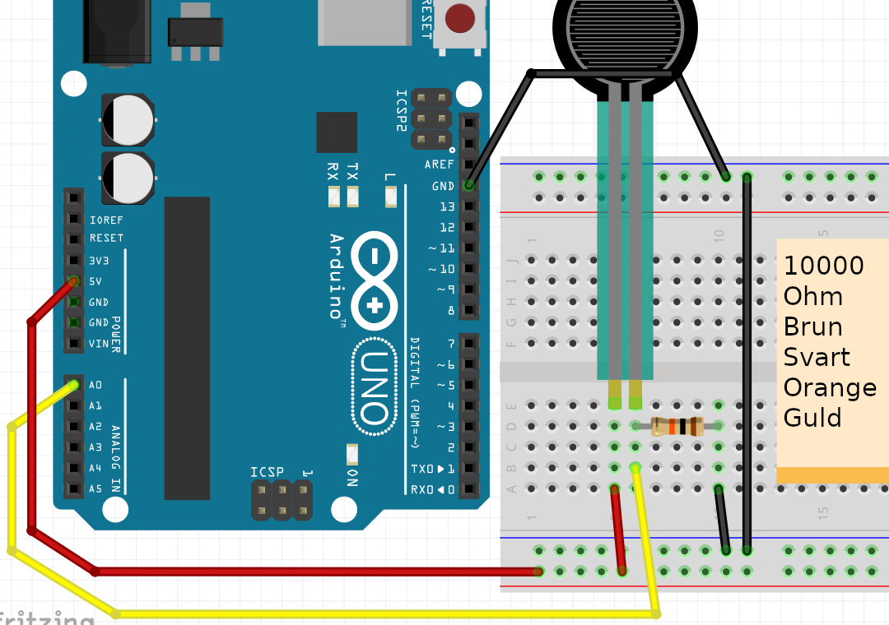
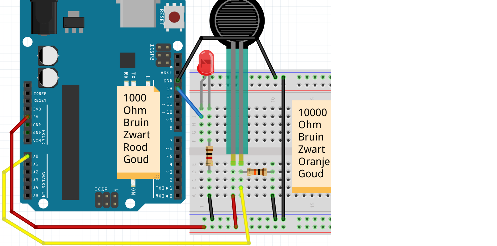

4. FSR¶
Seriell monitor¶
 |
Seriell monitor: platsen där du kan få Arduino att prata genom en seriell port |
|---|---|
Den seriella monitorn låter oss få Arduino att prata. Eller mer exakt: att denna text skickas till den seriella monitorn. Den seriella monitorn visar denna text på din dator.
Anslut endast Arduino¶
Först ansluter vi bara en Arduino:

Jag tycker att det här borde fungera :-)
|
Den seriella bildskärmen går via USB-kabeln mellan Arduino till dator |
|---|---|
Kod: Serial Monitor¶
 |
 |
|---|---|
Serial.begin(9600); |
'Bästa dator, låt Arduino prata med 9600 bitar per sekund' |
Serial.print("Hej"); |
'Bästa dator, låt Arduino säga ordet 'Hej'' |
Serial.println("Hej"); |
'Bästa dator, låt Arduino säga ordet 'Hej' och starta en ny rad' |
Kommandon 1¶


- Ladda upp programmet. I Arduino IDE, klicka på "Serial Monitor" uppe till höger. Vad ser du?
- Kan du ändra texten till "Hej Richel" (eller ditt eget namn?)
- Ändra
Serial.printlntillSerial.print. Vad ser du? - Ändra texten
Serial.begin(9600)tillSerial.begin(4800). Vad ser du? Varför?
Svar 1¶
- Den seriella monitorn visar en extra rad varje sekund, med texten "Hej"
- Ändra raden
Serial.println("Hello");tillSerial.println("Hello Ledge"); - Orden kommer en efter en, istället för en efter en
- Nu visar den seriella monitorn oläsbar text. Detta beror på att Arduino är långsammare att texta skicka till din dator (4800), sedan läser din dator texten (9600)
Ansluter FSR utan LED¶
|
FSR betyder "Force Sensitive Resistance" |
|---|---|
Först ansluter vi bara en FSR:

 |
Om det inte finns någon FSR, använd en LDR |
|---|---|
Kod: läs FSR med seriell monitor¶
Med denna kod mäter vi värdet på FSR:
void setup()
{
pinMode(A0, INPUT);
Serial.begin(9600);
}
void loop()
{
Serial.println(analogRead(A0));
delay(100);
}
|
|
|---|---|
Serial.println(analogRead(A0)) |
'Bästa dator, visa värdet på stiftet A0 på den seriella monitorn' |
Kommandon 2¶
- Ladda upp programmet. I Arduino IDE, klicka på "Serial Monitor" uppe till höger. Vad ser du?
- Tryck på FSR med fingrarna (eller, med en LDR: håll fingret över LDR) medan du tittar på den seriella monitorn. Vad ser du?
- Ändra
Serial.printlntillSerial.print. Vad ser du? - Ändra texten
Serial.begin(9600)tillSerial.begin(4800). Vad ser du? Varför? - Ta bort kabeln till
A0. Ja, ta bort kabeln mellanA0och LDR. Titta på den seriella monitorn. Vad ser du?
|
Motståndet mellan A0 och LDR kallas ett 'Pull Down'-motstånd |
|---|---|
Lösningar 2¶
- Du kommer att se ett tal från noll till 1024, beroende på värdet på FSR
- Du ändrar siffrorna
- Alla nummer kommer efter varandra
- Nu visar den seriella monitorn oläsbar text. Detta beror på att Arduino är långsammare att texta skicka till din dator (4800), sedan läser din dator texten (9600)
- Nu kommer du att se siffran ändras slumpmässigt. Detta kallas en flytande ingång
|
Ett 'Pull Down'-motstånd förhindrar en flytande ingång |
|---|---|
Ansluter FSR med LED, på/av¶
|
"Kraftkänsligt motstånd" betyder "Kraftberoende motstånd" |
|---|---|
Nu ansluter vi även en LED:

Svara på FSR, på/av¶
Nu ska vi få lysdioden att reagera på lysdioden:
void setup()
{
pinMode(A0, INPUT);
pinMode(13, OUTPUT);
}
void loop()
{
if (analogRead(A0) < 512)
{
digitalWrite(13, HIGH);
}
else
{
digitalWrite(13, LOW);
}
delay(100);
}
|
|
|---|---|
if (analogRead(A0) < 512) {} |
'Bästa dator, om A0 läser mindre än 2,5 volt, sätt det inom parentes. |
Uppdrag 3¶
- Vad händer om du ökar
512? Vad händer om du sänker512? - Se till att den seriella monitorn också mäter och visar "A0". Vilket nummer mäter FSR? i fred?
- Se till att den seriella monitorn visar ordet "ON" när lysdioden tänds, och att ordet "OFF" när lysdioden är avstängd
Lösningar 3¶
- Om
512ändras till en siffra som är för hög, kommer lampan alltid att lysa oavsett hur hårt/mjukt du trycker. Om512ändras till ett för högt nummer kommer lampan alltid att vara släckt, oavsett hur hårt/mjukt du trycker - För detta använd koden från föregående kommando: lägg till i
setup-funktionenSerial.begin(9600);, iloop-funktionen lägg tillSerial.println(analogRead(A0));. Värdet du kommer att se är beroende på motstånd, FSR och situation - Detta kan göras genom att sätta
Serial.println("ON");i den första delen avif-satsen. SättSerial.println("OFF");i den andra delen avif-satsen.
void setup()
{
pinMode(A0, INPUT);
pinMode(13, OUTPUT);
Serial.begin(9600);
}
void loop()
{
Serial.println(analogRead(A0));
if (analogRead(A0) < 512)
{
digitalWrite(13, HIGH);
Serial.println("AAN");
}
else
{
digitalWrite(13, LOW);
Serial.println("UIT");
}
delay(100);
}
Svara på FSR, Dim¶
Nu ska vi få lysdioden att reagera på lysdioden. Denna gång dimper lysdioden.
void setup()
{
pinMode(A0, INPUT);
pinMode( 9, OUTPUT);
Serial.begin(9600);
}
void loop()
{
const int fsr_waarde = analogRead(A0);
Serial.print("FSR: ");
Serial.println(fsr_waarde);
const int led_waarde = map(fsr_waarde, 0, 1023, 0, 255);
Serial.print("LED: ");
Serial.println(led_waarde);
analogWrite(led_waarde, 9);
delay(100);
}
|
|
|---|---|
analogWrite( 0, 9) |
'Bästa dator, stäng av stift 9' |
analogWrite(128, 9) |
'Bästa dator, vrid stift 9 till halvfullt' |
analogWrite(255, 9) |
'Bästa dator, slå på stift 9 fullt ut' |
map(analogRead(A0),0,1023,0,255) |
'Bästa dator, läs spänningen för A0. Detta är ett värde från 0 till 1023. Konvertera det avlästa värdet mellan 0 och 255.'. |
Uppdrag 4¶
- Lysdioden är på ett annat stift. Titta i koden och anslut lysdioden till rätt stift
- Vilka stift kan vi använda för att dämpa en lysdiod?
Lösningar 4¶
- Lysdioden måste nu kopplas till stift 9
- Alla stift med en våg (
~) före numret. Dessa är 3, 5, 6, 9, 10, 11.
Uppgift 5¶
Anslut två lysdioder till stift 12 och 13. När FSR är i vila ska ingen lysdiod lysa. Om du trycker försiktigt på FSR, en LED tänds. Om du trycker hårt på FSR, två.
|
Tips: använd två if-satser |
|---|---|
Lösning 5¶
Siffrorna i "if"-satsen måste vara korrekt inställda.
void setup()
{
pinMode(A0, INPUT);
pinMode(12, OUTPUT);
pinMode(13, OUTPUT);
Serial.begin(9600);
}
void loop()
{
Serial.println(analogRead(A0));
if (analogRead(A0) < 256)
{
digitalWrite(13, HIGH);
}
if (analogRead(A0) < 512)
{
digitalWrite(12, HIGH);
}
delay(100);
}
Uppgift 6¶
Du kan också få en LED att reagera på en FSR genom att bleka/dimma den
- Vilket kommando gjorde du det med igen?
- Är det möjligt med vilken stift som helst? Om inte, med vilket ja/nej?
- Vilket är det högsta värdet som du kan tända en LED med?
- Vilket är det högsta värdet FSR kan mäta?
- Antag att du vill tända en lysdiod beroende på ett FSR-värde. Hur kunde du göra detta?
- Hur får man kod att göra en division?
- Slå på lysdioden beroende på FSR-värdet
Lösningar 6¶
- Du kan tona en lysdiod med
analogWrite, till exempelanalogWrite(11, 255); - Du kan bara dimma en lysdiod med PWM-stift. Det här är stiften med en våg
(
~) bredvid deras nummer. På Arduino Uno är dessa stift 3, 5, 6, 9, 10 och 11 - Med
analogWritekan du ge upp till 255, till exempelanalogWrite(11, 255); - Med
analogReadkan du mäta upp till 1023 - Du läser ett värde, dividerar det med fyra (1024 dividerat med 256 är fyra) och låter lysdioden lysa så
- Med divisionsfältet,
/. - Se nedan. Glöm inte att sätta en lysdiod på stift 11
void setup()
{
pinMode(A0, INPUT);
pinMode(11, OUTPUT);
Serial.begin(9600);
}
void loop()
{
analogWrite(11, analogRead(A0) / 4);
delay(100);
}
|
|
|---|---|
analogWrite(11, analogRead(A0) / 4) |
'Bästa dator, dämpa stift 11 till värdet av stift A0 (diva detta med fyra)' |
Einorder¶
- Anslut fyra lysdioder: en vit, en röd, en gul och en grön
- När FSR är i vila ska ingen lysdiod lysa.
- När du trycker lätt på FSR tänds den gröna lysdioden
- Om du trycker hårdare på FSR kommer de gröna och gula lysdioderna att tändas
- När du trycker hårt på FSR tänds de gröna, gula och röda lysdioderna
- Den vita lysdioden lyser starkare och mjukare beroende på FSR
Om du inte har en vit LED, använd en annan färg.